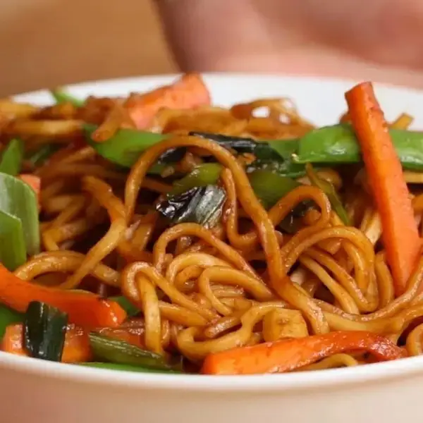

Veggie Garlic Noodles

Description
This simple and satisfying recipe features tender noodles tossed in garlic, soy sauce, and sesame oil, then
topped with vegetables for a flavorful vegetarian meal.
Ingredients for 4 servings
- 2 tablespoons vegetable oil(30 mL)
- 5 cloves garlic, minced
- 4 green onions, sliced, divided
- 2 carrots, cut into matchsticks
- 1 cup snap peas(100 g)
- 2 tablespoons brown sugar
- 3 tablespoons soy sauce
- 9 oz dried rice noodles(250 g), cooked
Steps
- Heat the vegetable oil in a large skillet over medium heat. Add the garlic and 3 green onions and cook for
2 to 3 minutes, until fragrant and tender. Add the carrots and snap peas, then stir in the brown sugar and
soy sauce.
- Add the noodles and toss for a couple of minutes, until the noodles are well-coated and the vegetables are
tender. Season with salt and pepper.
- Serve immediately, garnished with the remaining green onion.
- Enjoy!
Back to top of page
Go to mac and cheese
Go to slow_cooker_pot_roast